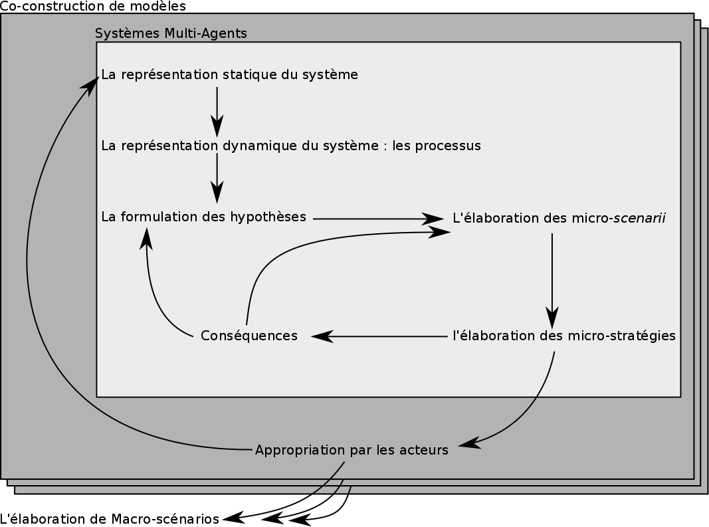

Réflexions géographiques sur l'usage des systèmes multi-agents dans la compréhension des processus d'évolution des territoires viticoles de fortes pentes
Le cas de la Côte Vermeille et du val di Cembra
Présenté et soutenue par Etienne Delay
Sous la direction de : É. Rouvellac, N. Becu et P. Allée.
École doctorale n° 526 «Sociétés et Organisation»
10 juin 2015

Back in time
L'itinéraire géographique et viticole 2008-2015
- 2008 - Licence 3 «Valorisation du patrimoine et aménagement du territoire»: Stage au Centre d'Ampélographie Alpine Pierre Galet
- 2009 - Master 1 : Stage au Centre d'Étude de Recherche et de valorisation de la viticulture de montagne
- 2010 - Master 2 : Ingénieur d'étude au centre de transfert technologique de la Fondazione E. Mach (IT)
- Depuis 2011 - Thèse de géographie à l'université de Limoges
Introduction
Viticulture, zone de production d'imaginaires...
... faite par des Hommes
 Source : CERVIM 2006
Source : CERVIM 2006
Définitions des problématiques et des terrains d'études
Le contexte général
- La viticulture de montagne et de fortes pentes ne fait pas l'objet d'études spécifiques
- La tendance est à l'abandon des pentes au profit d'une viticulture mécanisée en pleine
L'intuition initiale nous pousse à réfléchir et explorer les influences des spécificitées liées à la pente dans les pratiques socio-spatiales viticoles
Les spécificitées de la viticulture de pentes
- Des terrains souvent pauvres, rapidement reconnus comme qualitatifs
- Des conditions de travail difficiles, qui interdisent la mécanisation
- Un accès aux parcelles complexes et des distances temps accentuées par la pente
- Une structuration sociale particulière qui fait la part belle aux petits exploitants et au système coopératif
Les problématiques
Explorer les interactions société ⇔ environnement pour proposer une lecture et une compréhension renouvellées du fonctionnement de la viticulture de pente

Les terrains d'études

Banyuls-sur-mer

La val di Cembra
Un cadre théorique pourla modélisationet la simulation
Définition et limites conceptuelles

Première publication de l'ontologie du terroir : Delay (2013)
Une démarche post-normale ?
« when uncertainties are either of the epistemological or ethical kind, or when decision stakes reflect conflicting purposes among stakeholders »
Funtowic et Ravertz 1993 (p. 750)
Pour faire face à l’inconnu ou la complexité liée aux comportements humains, les sciences post-normales l'intègrent et la délimitent en utilisant une communauté de pairs.
Modéliser...
« dépacer l'unicité des lieux et des phénomènes observés »
(Pumain, 2003, p.27)
« un modèle est une abstraction qui simplifie le système réel étudié [...] pour se focaliser sur les aspects qui intéressent le modélisateur et qui définissent les problématiques du modèle. »
Coquillard et Hill (1997, p.7)
crédit photo : JD Hancock Flick'r... et simuler
« La simulation consiste à faire évoluer une abstraction d’un système au cours du temps afin d’aider à comprendre le fonctionnement et le comportement de ce système et à appréhender certaines de ses caractéristiques dynamiques dans l’objectif d’évaluer différentes décisions »
Coquillard et Hill (1997, p.11)

Les systèmes multi-agents (SMA)
Un agent est une entité physique ou virtuelle
- capable d'agir dans un environnement
- mue par un ensemble de tendances (sous forme d'objectifs)
- capable de percevoir (de manière limitée) son environnement
- dont le comportement tend à satisfaire ses objectifs
J. Ferber 1995
crédit photo : Y tambe in wikimedia commons{kind=link}
De l'empirisme dans la modélisation 1/2
Les SMA ouvrent la voie pour les SHS aux construits formels
« formal models are essential to science, not because they are more "true" than other kinds of model, but that they facilitate a collective and progressive development of knowledge between researchers »
Edmonds (2015, §1.2)
De l'empirisme dans la modélisation 2/2

Tubaro, P. et A. Casilli (2010).
Méthodologie
Caractériser notre pratique
Nous avons construit un écosystème de modèles s'interrogeant et se répondant les uns les autres
Pour cela nous avons recueuilli plusieurs types d'informations:
- Des données d'observations
- Des relevés physiques (température, acidité, comptage)
- Des narrations (entretiens)
- ...
Situer les modèles et leurs objectifs
Nous présentons six modèles

d'après la grille de lecture proposée par Banos et Sanders (2013)
Une construction itérative et partagée
| Modèles | Echelles | Acteurs |
|---|---|---|
| Dion Still Alive & VIcTOr | Petite échelle | Chercheurs ou institutions nationales |
| LAME & CiVIsMe | Meso-échelle | Institutions régionales/nationales |
| acidityGIS & CeLL | Grande échelle | Acteurs locaux |
Ces modèles nous permettent d'obtenir des résultats à différentes échelles et pour différents usages
Construction
La modélisation multi-agents permet une très grande flexibilitée de programmation, et est pariculièrement adaptée aux systèmes complexes
Or, les processus sociaux sont par nature complexes
«Social sicences are, in fact, the "hard" science»
Herbert Simon (économiste)
«With great power comes great responsibility»
Benjamin "Ben" Parker (1962)
Vous avez dit validation ?
La validation de systèmes complexes et a fortiori sociaux est compliquée. Pour surmonter cette difficulté :
- réplicabilité : une description ODD (Overview Desing and Details) (Grimm et al., 2006)
- Une analyse de sensiblité
- Une construction, une co-construction ou une validation par les acteurs au même titre que par les données
Résultats de modélisations
Remise en contexte
Nous présenterons deux modèles :
- CiVIsMe : modèle à meso-échelle qui s'intéresse au système coopératif
- Cell : modèle à échelle fine qui s'intéresse aux dynamiques de population de L. botrana, et aux stratégies collectives de lutte.
CiVIsMe
CeLL
Prospective et simulations co-construites 1/2
D'après Sebillotte et Sebillotte (2002), adaption à la prospective par co-construction (Delay, 2015)
Prospective et simulations co-construites 2/2

|
Conclusion
Les grandes lignes
- Viticulture de fortes pentes
- L'espace viticole est une construction sociale
- L'hétérogénéité spatiale → possibilitées d'adaptations locales
- Des espaces ambigüs : entre forte visibilité et faible rentabilité
- Démarche de modélisation
- Résultats = résultats de modélisation + processus de modélisation
- Difficile construction de modèles à la fois généraux et descriptifs
- La prospective dans la démarche de simulation pour préparer l'esprit à voir l'information
Des limites ?
- Types d'acteurs VS types d'échelles
- Modéliser pour comprendre VS modéliser pour prédire
- Le couplage de modèles et les comportements d'agents
Et demain matin ?
Ce travail se prolonge :
- Au travers de vitiTerroir
- L'axe Ricerca sulla viticoltura di montagna de la fondazione E. MACH
- Du programme LACCAVE (Long term impacts and Adaptation to Climate ChAnge in Viticulture and Enology)
- Projet de programme coopération viticole
- ...
Merci de votre attention


Vous pouvez retrouver cette présentation, le manuscrit de thèse et l'ensemble des modèles sur GitHub : http://unil.im/Ku9xI
Présentation réalisée avec reveal.js Crédit photo : Thomas Misnyovszki on Flick'r